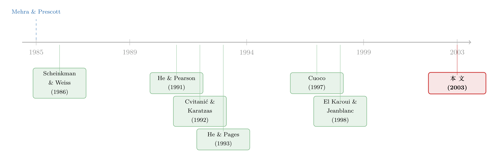

借不到明天的钱，于是他把今天的财富押成了一份美式期权
本文读的是 Detemple & Serrat (2003, Review of Financial Studies)：当一部分投资者不能拿未来的劳动收入做抵押去借钱（流动性约束），他们的最优消费—组合问题会塌缩成一个停时问题——最优财富恰好等于「无约束财富」加上一份写在它身上的美式看跌期权；把这个微观结构嵌进一般均衡，均衡的无风险利率与股票收益里会冒出过去模型里没有的奇异（singular）成分，而它能缓解无风险利率之谜、却仍解释不了夏普比率的量级。
1 一个被时间「卡住」的难题
先抛一个看起来很无辜的问题：你这辈子要赚的工资，折成现值大概是一笔不小的财富。既然它是你的财富，为什么你不能今天就把它花掉一部分？
答案当然是——你借不到。没有哪家银行愿意拿你「将来会按月到账的工资」做抵押，凭空借给你一大笔钱。原因也不神秘：劳动收入这种禀赋流，要么因为道德风险 (moral hazard) 不能被市场化，要么因为那些个人化的、特异的 (idiosyncratic) 收入根本无法被第三方核实——哪怕它可观测，也不可验证。于是现实里就出现了一条几乎无处不在的约束：你的空头头寸必须用可交易资产完全抵押。换句话说，未来要进账的特异收入，在真正落袋之前，不能算进你的「流动财富」里。
这就是这篇论文的主角：流动性约束 (liquidity constraint)。
它听上去平平无奇，但有一个非常要命的后果。在完全市场里，你什么时候拿到收入并不重要，反正你可以借贷把消费熨平 (consumption smoothing)；可一旦借不到，收入到账的时间点本身就变得重要起来——它直接决定了你哪几段时间手头宽裕、哪几段时间被勒住脖子。于是消费、组合、乃至整个市场的资产价格，都要为这条「时间表」重新定价。
注意把它和文献里另外两类摩擦区分开。不完全市场 (incomplete markets) 说的是风险无法被对冲；组合约束 (portfolio constraints)（如禁止卖空）限制的是头寸方向。而流动性约束限制的是流动财富的水平——你可以做空，但必须拿手里的可交易资产足额抵押。Detemple & Serrat 反复强调，这是一种和前两者「实质不同」的约束。
接着，一个自然的问题是：约束之下，最优消费到底长什么样？这恰恰是过去二十年文献啃得最硬、却又留了最大缺口的地方。
2 真正关键的一步：把约束翻译成一份美式期权
这篇论文用的「武器」，是 He & Pages (1991) 提出、El Karoui & Jeanblanc-Picqué (1998，下称 EJ) 系统发展的停时方法 (stopping time approach)。它的核心洞察异常漂亮：
在流动性约束下，最优财富会在一连串内生的随机时点上变成零——那些时点，正是约束「咬住」（binding）的时刻。
为什么是零？因为约束要求流动财富时时刻刻非负 (\(X_t^i \ge 0\))；当它真的被逼到下界，财富必然贴着零运行。而在两次「咬住」之间，投资者其实像没有约束一样行动——这是 He & Pages 早就识别出的事实。于是整条投资期被这些停时切成若干段，每一段内部都可以按无约束的方式去最优配置资源。
那么，约束问题就被改写成了一个最优停时问题。令 \(I(\cdot,v)\equiv u_c^{-1}(\cdot,v)\) 为消费的逆边际效用，无约束最优消费是 \(c_v=I(z\xi_{t,v},v)\)，其中 \(z\equiv y\xi_t\)、\(y\) 是静态预算约束的拉格朗日乘子。最优流动财富满足：
$$ X_t(z)=\sup_{\tau\in\Gamma_{t,T}} E_t\!\left[\int_t^{\tau}\xi_{t,v}\big(I(z\xi_{t,v},v)-e_v\big)\,dv\right] $$
这里 \(\Gamma_{t,T}\) 是取值于 \([t,T]\) 的停时集，\(\xi_{t,v}=\xi_v/\xi_t\) 是相对状态价格密度 (state price density, SPD)。这个式子说的是：投资者要挑一个最优的随机子区间，在这段时间里像无约束那样花钱。
但真正关键的一步在于——这个停时问题可以被分解成一个无比熟悉的对象。简单整理后，
$$ X_t(z)=X_t^u(z)+P_t^u(z), $$
其中 \(X_t^u(z)=E_t\!\left[\int_t^{T}\xi_{t,v}\big(I(z\xi_{t,v},v)-e_v\big)dv\right]\) 是无约束流动财富，而
$$ P_t^u(z)=\sup_{\tau\in\Gamma_{t,T}} E\big[\max\{-\xi_{t,\tau}X_\tau^u(z),\,0\}\big] $$
是一份执行价为零、写在无约束财富上的美式看跌期权。
让我们把这个核心方程拆开来看：
这个分解为什么是神来之笔？因为它把一个抽象的约束控制问题，翻译成了金融工程里被研究得最透的东西——美式期权定价。直觉是这样的：只要无约束财富 \(X_t^u\) 还是正的，立即行权就是亏的（行权会减少资源的价值 \(X_t(z)\)），于是投资者继续按初始乘子 \(z\) 消费；可一旦 \(X_t^u\) 跌到足够负，立即行权变得最优——此刻无约束财富加上看跌期权的收益（即约束财富）正好归零，乘子被「重置」，消费跳到一个新水平，然后一切从头再来。投资者一生的配置，就是这样一串首尾相接的美式期权。
接着，论文给出 Theorem 1：这份美式看跌可以写成提前行权溢价 (early exercise premium, EEP) 表示
$$ \pi_t(z)=-E_t\!\left[\int_t^{T}\xi_{t,v}\big(I(z\xi_{t,v},v)-e_v\big)\mathbf{1}_{\mathcal{E}_s(z)}\,ds\right], $$
其中 \(\mathcal{E}_s(z)\equiv\{z\ge B_s\}\) 是立即行权最优的状态集，\(B=\{B_t\}\) 是最优行权边界。最优边界满足递归积分方程 \(X_t^u(B)+\pi_t(B)=0\)，边界条件 \(I(B_T,T)=e_T\)。
到这里，整个约束问题已经被压缩成一句话：只要解出行权边界 \(B\)，最优消费策略就完全确定了。 这正是论文相对 EJ 的第一项贡献——EJ 证明了最优策略存在，Detemple & Serrat 则给出了一个能真正算出边界、能落地到数值实现的可操作框架。
3 闭式解：当效用是 CRRA
光有抽象框架还不够过瘾。论文的第二步，是在有限期 + 常相对风险厌恶 (constant relative risk aversion, CRRA) 下把一切算成闭式——而 He & Pages (1993) 和 EJ (1998) 此前只解过无限期的情形。
设相对风险厌恶系数为 \(R\)，\((r,\theta)\) 为常数、\(A=0\)，禀赋服从 \(de_t=e_t(\mu^e dt+\sigma^e dW_t)\)。定义 \(G_t(a)=\frac{1}{a}[\exp(a(T-t))-1]\)。论文证明（Theorem 2 的证明），无约束最优财富为
$$ X_t^u(y\xi)=e_t\big[x_t^*\,G_t(\alpha)-G_t(\delta)\big], $$
其中
$$ \alpha=-\Big(1-\frac{1}{R}\Big)\Big(r+\frac{1}{2R}\theta^2\Big),\qquad \delta=\mu^e-r-\sigma^e\theta, $$
而 \(x_t^*\equiv (y\xi_t)^{-1/R}/e_t\) 是最优无约束消费与禀赋之比，满足
$$ dx_t^*/x_t^*=\mu^* dt+\Big(\frac{1}{R}\theta-\sigma^e\Big)dW_t^e,\qquad \mu^*=\frac{1}{R}\Big(r+\frac{1}{2}\Big(\frac{1}{R}-1\Big)\theta^2\Big)-\mu^e+\theta\sigma^e. $$
这里有一个很有味道的细节：\(x_t^*\) 的波动率是 \(\frac{1}{R}\theta-\sigma^e\)，它的正负，取决于无约束消费的波动率 \(\frac{1}{R}\theta\) 是高于还是低于禀赋波动率 \(\sigma^e\)。换句话说，约束咬不咬得动你，归根结底要看你的「想花的钱」相对「到手的钱」抖得有多厉害。从 \(X_t^u\) 的表达式还能看出：写在无约束财富负部上的那份美式看跌，等价于 \(e_tG_t(\alpha)\) 份写在消费—禀赋比 \(x_t^*\) 上、执行价为 \(G_t(\delta)/G_t(\alpha)\) 的美式看跌——立即行权集变成 \(\mathcal{E}_s\equiv\{x_s^*\le B_s\}\)。
于是行权边界 \(B\) 成了一个只依赖时间、不依赖布朗运动 \(W\) 的确定性函数，由递归积分方程 \(\pi_t(B\mid B(\cdot))=G_t(\delta)-B_tG_t(\alpha)\)、\(B_T=1\) 解出。预算乘子 \(y^*\)、流动性乘子 \(\nu_t^*\) 乃至整条消费路径 \(c_t^*=((y^*-\nu_t^*)\xi_t)^{-1/R}\) 全都落进闭式。
论文用一组参数 (\(\mu^e=.10,\ \sigma^e=.20,\ \theta=.30,\ r=6\%,\ T=5\)) 画出行权边界 \(B\) 关于剩余期限 \(T-t\) 的形状，并展示它随期限递减——直觉是：如果一个更短期的看跌都已经值得立即行权，那么一个更长期的看跌就更值得。风险厌恶 \(R\) 越大，边界整体抬高，约束越容易咬住。
至此论文交付了它在「控制」层面的两件礼物：一个能算的边界，和一组真正能写出来的有限期闭式消费/组合策略。
4 反转：把它放进均衡，价格里冒出了「奇异成分」
如果故事到这儿就结束，那它不过是一篇漂亮的最优控制文章。但真正的反转在第三步——把约束个体和无约束个体放进同一个一般均衡里，会发生什么？
论文的做法是把均衡 SPD 与一个带非线性收益的美式型未定权益的行权边界挂起钩来：清算消费品市场的状态价格密度，等于「总需求逆函数」在总消费处取值、并以约束个体的流动性乘子作参数。利用这层关系，均衡 SPD 就由一个停时问题的最优行权边界决定——这既证明了竞争均衡的存在性，也能用于数值实现。
而它最惊人的发现是：均衡的股票收益和债券收益里，都含有奇异成分。
具体到无风险资产，它的（累积）收益 \(dR_t^f=r_t\,dt+dA_t\) 由两块组成：
- 第一块 \(r_t\) 是大家熟悉的局部无风险利率：在聚合者具正审慎 (prudence) 时，它与预期消费增长率正相关、与总消费风险负相关；
- 第二块 \(dA_t\) 是一个非增的奇异成分，专门系于约束的「咬住」事件。
逻辑链条是这样的：当约束在某个个体身上咬住，他的消费需求会经历一次永久性跳升；而此刻他被禁止借入、却仍能借出——于是均衡的无风险收益必须比没有约束时更低。论文给出了它会无歧义下降的条件。
那股票呢？论文证明了一件很克制、也很重要的事：尽管奇异成分会同时进入股票和债券的收益（而且跨资产必须相同），但股票的风险溢价依旧满足标准的消费 CAPM (consumption CAPM)。流动性约束并不会破坏这个等式——它只是通过改变消费配置来影响溢价的大小。更精确地说：
当总风险厌恶是约束个体消费份额的递减（不变）函数时，股票市场的夏普比率无歧义上升（保持不变）。
CRRA 下论文给出了闭式。但论文同时诚实地泼了一盆冷水：流动性约束撑不起夏普比率的经验量级——尽管它确实有望缓解 Weil 的无风险利率之谜 (risk-free rate puzzle)。这是一句很关键的话：它把流动性约束在资产定价里的位置，钉得清清楚楚——它修的是利率那一头，不是溢价那一头。
（关于「谁被挡在市场门外、对股权溢价究竟贡献几何」这一更宽的辩论，可参见《谁被挡在股市门外，并不重要——重看「有限参与」对股权溢价的真实贡献》；而把劳动收入与生命周期组合选择放在一起的视角，则可对照《年纪越大，越该把钱从股票里挪出来吗？》。）
5 文献脉络
这条线的源头，是上世纪八十年代那个挥之不去的尴尬：完全市场模型连资产收益最基本的性质都解释不了。Mehra & Prescott (1985) 把股权溢价之谜摆上桌，Weil (1992) 又补上一个无风险利率之谜——两者像一对孪生的难题，逼着研究者往「摩擦」里找答案。

一条路是不完全市场：Scheinkman & Weiss (1986) 的单资产生产经济、He & Pearson (1991) 的不完全市场消费组合。另一条路是组合约束：Cvitanić & Karatzas (1992) 的凸对偶、Cuoco (1997) 直接从原问题证明了一大类约束（含最低资本要求/流动性约束）下最优策略的存在。而专门针对流动性约束的脉络，由 He & Pages (1993) 用对偶方法开启——他们已经把约束咬住的时刻刻画成停时，并意识到两次咬住之间投资者「形同无约束」；随后 EJ (1998) 把对偶问题与美式看跌定价正式对接，用停时理论证明了最优策略的存在。
Detemple & Serrat (2003) 站在 EJ 的肩膀上，往前推了两步：一是把行权边界变成可计算、给出有限期 CRRA 的闭式策略（这是 He & Pages 与 EJ 都只做了无限期的地方）；二是——也是更稀缺的——把这套微观结构嵌进一般均衡，证明存在性，并揭示出价格里的奇异成分。在此之前，关于流动性约束的均衡结果一直「稀稀拉拉」（He & Pages 1993 第 7 节只在「价格是扩散、利率绝对连续」的假设下给过一些直觉）。
6 评论与延伸（Q&A + 研究方向）
(a) 几个可能的疑问
Q：流动性约束、不完全市场、卖空约束，到底有什么不一样？
三者管的是不同的东西。不完全市场管的是「风险对冲不了」；卖空约束管的是「头寸方向」；流动性约束管的是「流动财富的水平不能为负」——你可以做空，但必须用可交易资产足额抵押。本文反复强调，正因为约束的是流动财富而非全部财富，收入到账的时间表才第一次变得对定价至关重要。
Q：那份「美式看跌」是真有人在市场上买卖的期权吗？
不是。它是一个记账意义上的对象——把约束控制问题做对偶/分解之后自然浮现的数学结构。它的执行价是零，标的是「无约束流动财富」，提前行权对应着约束被咬住、消费乘子被重置的时刻。它的价值就是为应付未来约束而必须预留的缓冲储备。
Q：为什么均衡里会冒出「奇异成分」，它经济上意味着什么？
因为约束咬住是一个奇异（非绝对连续）事件：约束个体的消费需求在那一刻发生永久跳升，而他此刻只能借出、不能借入，于是无风险收益被向下「推」一下。这个推力累积成一个非增的奇异过程 \(A\)，跨资产相同。它的存在意味着：在有约束的经济里，无风险利率的动态比教科书里多了一项「会跳的、只往下走的」修正。
Q：本文说股票风险溢价仍满足消费 CAPM——那约束到底有没有影响溢价？
有，但是间接的。消费 CAPM 这个等式本身不被破坏，约束是通过改变均衡消费配置来影响溢价的大小。一个干净的结论是：当总风险厌恶是约束者消费份额的递减函数时，夏普比率会上升；若不变则不变。
Q：那它能解释股权溢价之谜吗？
不能，至少不能靠它单独解释。论文很诚实：流动性约束无法支撑夏普比率的经验量级，但有望缓解无风险利率之谜。它修的是「利率太高」那一头，而不是「溢价太大」那一头。
Q：有限期 vs. 无限期，差别只是技术细节吗？
不只是。有限期下行权边界是一条随期限递减的确定性曲线，边界条件 \(I(B_T,T)=e_T\) 把终端钉死；这让整个问题可以递归地、数值地求解，也让「期限越长越不急于行权」这种直觉变得可量化。无限期模型里这些时间维度的结构是看不到的。
(b) 几个可能的研究问题与提案
1. 把「流动性约束」从家庭搬到公司债投资者身上。
【经济故事】本文的约束个体不能拿未来现金流抵押借钱。把同样的逻辑放到持有公司债的机构上：当赎回压力或保证金要求咬住，它们被迫只能「卖出、不能借入」，这会不会在信用利差里也压出一个非增的奇异成分？这正好接上危机期公司债流动性骤降的经验（可参见《差点死掉的那个市场：一场公司债流动性危机的微观解剖》）。
【可行性】中。理论端可直接改造本文框架；实证端需要 TRACE 成交 + 基金持仓/赎回数据来识别「约束咬住」的时点，识别难点在于把约束事件与基本面冲击分开。
2. 外资持有人的「跨境流动性约束」。
【经济故事】外资在本币市场往往面临更强的抵押/回购约束。若把约束个体设为外资、无约束个体设为本地机构，本文预言：外资约束咬住时，本地无风险利率被向下推、夏普比率随外资消费份额变化。这能为「外资进出如何改写本地资产价格」提供一个结构化的解释。
【可行性】中偏低。需要分国别的外资持仓与融资约束代理变量；纯结构识别难，更现实的是把本文当作机制，用事件（如保证金规则变更）做约化实证。
3. 行权边界的数值实现 → 校准到真实利率动态。
【经济故事】本文给了可计算的边界和闭式 CRRA 策略，但没有把模型校准到数据去看那个奇异成分 \(A\) 在真实无风险利率里有多大。把它数值实现、用宏观消费与利率数据校准，能直接检验「流动性约束缓解无风险利率之谜」这句话的定量分量。
【可行性】高。模型已是闭式/可递归求解，所需数据（总消费、短期利率）都是公开的；这是一个 doable 的纯量化练习。
4. 异质约束强度下的均衡分布。
【经济故事】本文是「约束 vs. 无约束」的二分。现实中约束强度是连续谱。让约束乘子在人群中服从某个分布，看总风险厌恶（进而夏普比率）如何随约束人群的财富份额演化，可能给出更丰富的横截面含义。
【可行性】中。理论上是本文的自然推广，但多类型均衡的存在性与计算会显著变难。
7 参考文献
- Cuoco, D. (1997). Optimal Policies and Equilibrium Prices with Portfolio Constraints and Stochastic Income. Journal of Economic Theory 72, 33–73.
- Cvitanić, J., and I. Karatzas (1992). Convex Duality in Constrained Portfolio Optimization. Annals of Applied Probability 2, 767–818.
- Detemple, J., and A. Serrat (2003). Dynamic Equilibrium with Liquidity Constraints. Review of Financial Studies 16(2), 597–629.
- El Karoui, N., and M. Jeanblanc-Picqué (1998). Optimization of Consumption with Labor Income. Finance and Stochastics 2, 409–440.
- He, H., and H. Pages (1993). Labor Income, Borrowing Constraints, and Equilibrium Asset Prices: A Duality Approach. Economic Theory 3, 663–696.
- He, H., and N. Pearson (1991). Consumption and Portfolio Policies with Incomplete Markets and Short-Sale Constraints: The Infinite Dimensional Case. Journal of Economic Theory 54, 259–304.
- Mehra, R., and E. C. Prescott (1985). The Equity Premium: A Puzzle. Journal of Monetary Economics 15, 145–161.
- Scheinkman, J., and L. Weiss (1986). Borrowing Constraints and Aggregate Economic Activity. Econometrica 54, 23–45.
- Weil, P. (1992). Equilibrium Asset Prices with Undiversifiable Labor Income Risk. Journal of Economic Dynamics and Control 16, 769–790.
我的判断。 这篇论文真正的贡献，不在那串闭式公式本身，而在它把「借不到钱」这件最朴素的事，翻译成了一个金融学家最熟悉的对象——一份美式看跌期权，再顺着这条线把均衡的存在性和价格的奇异结构一并解决。它的克制也值得敬佩：明明可以把流动性约束吹成解释一切之谜的灵药，作者却老老实实告诉你，它只够缓解无风险利率之谜，撑不起夏普比率。对「识别」的担忧主要是结构层面的——奇异成分的存在严重依赖连续时间、单一布朗运动、CRRA 这一整套设定，一旦换成跳跃、随机波动或更一般的偏好，那个干净的「美式期权」结构是否还成立，并不显然；而把模型对到数据上、给奇异成分一个经验量级，这篇论文也尚未做。我最想看到的后续，正是第 6 节第 3 个提案：把这套可计算的边界真正校准到真实利率，让「流动性约束修的是利率那一头」这句漂亮的话，长出一个能被检验的数字。